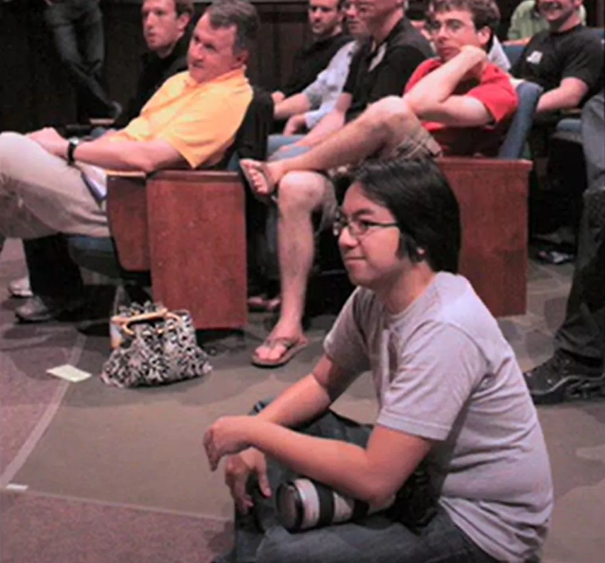

How giving first opened Y Combinator's doors for Garry Tan
Originally posted on LinkedIn, March 31, 2025.
Garry Tan knew no one, had no funding, and did not even have a finished idea. Still, within a year, he was standing on the Y Combinator stage.
In 2008, Garry was stuck. He had left Microsoft and dreamed of starting his own company, but he had no connections, no investors, and no idea how to begin. Frustrated and trying to support himself, he started photographing album covers for local rappers.
One day, he heard about Startup School, Y Combinator's prestigious event featuring speakers such as Jeff Bezos and Marc Andreessen. Garry wanted to attend, but not as just another person in the audience. He wanted to contribute.
So he did something unusual. He arrived early, sat in the front row, and professionally photographed every speaker without being asked or paid. When the conference ended, he went home, edited the photos immediately, and uploaded them to Hacker News.
By the next morning, his inbox had exploded. His post had gone viral and caught the attention of Paul and Jessica Graham, the founders of YC.
Hundreds of people were contacting them at the time, asking for mentorship or a place in YC. Garry asked for nothing. He just gave.
A year later, he stood on that same stage, this time not as a photographer but as a founder presenting his company as part of YC's new batch. Paul and Jessica said onstage that what convinced them to invest in him was that first unsolicited act of giving. He had simply shown up and helped.
A few years later, the circle closed further when Garry became a YC partner. In 2022, he received a phone call from Paul Graham with the biggest offer of all: to become the CEO of Y Combinator.
The place he had once dreamed about and wanted to impress was now under his leadership. As Garry put it: “If you give first, you'll be surprised by what you get back. What you put out into the world will come back to you dozens of times over.”
